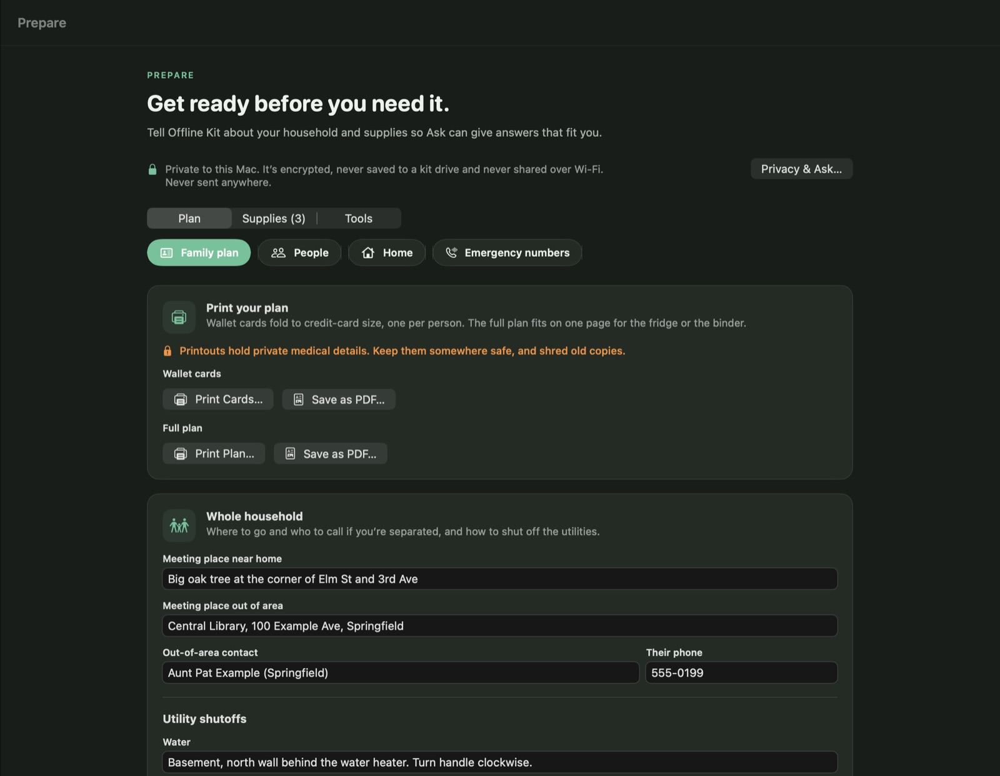

Ask
Ask in plain English and get an answer from your saved library, with numbered sources you can open. The AI runs on your Mac, so your questions stay on it, unless you choose to use Ollama on another computer at home. You can ask out loud, too.
Your family’s library, ready when the internet isn’t. Ask questions, read Wikipedia and repair guides, keep a family plan and enjoy your own movies, books and games, all with no connection.
Always the newest version. Needs a Mac with Apple silicon (M1 or newer) and macOS 26 or later.

What’s inside
You need the internet once, to download what you choose. After that it all works offline: in a storm, on a trip or when the power’s out.
Ask in plain English and get an answer from your saved library, with numbered sources you can open. The AI runs on your Mac, so your questions stay on it, unless you choose to use Ollama on another computer at home. You can ask out loud, too.
Wikipedia, medical references, iFixit repair guides, Stack Exchange and more. Browse by area and topic or search everything. Offline maps come from OpenStreetMap.
A family plan with meeting places, contacts and utility shutoffs, printable wallet cards, supplies with expiry reminders and a power-out mode that times your fridge and freezer.
Your movies, shows, music, audiobooks and books in one place, plus free classic books to start. It remembers where you stopped, and your keyboard’s play and skip keys work.
Games you add for Game Boy, Game Boy Color, Game Boy Advance, NES, PC Engine, DOS and ScummVM, right in the app.
Phones and tablets in the house can use the library from a web browser, with no internet and nothing to install on them.
Copy the app and your whole library to a USB drive. Every file is checked, and the drive runs Offline Kit on any Apple silicon Mac with macOS 26 or later.
When a new version is out, Offline Kit tells you. One click installs it and reopens the app. Your library and settings stay as they are.
A closer look

Pick areas like Emergency, Health and Home, see the size of everything before it downloads and save to your Mac or a USB drive. Downloads pick up where they left off and are checked when they finish.

What you tell Offline Kit about your household is encrypted on your Mac and never shared over Wi-Fi. It’s only sent anywhere if you choose an Ollama computer on your home network to answer questions. Ask uses it to give answers that fit your family.
Getting started
Answers come from your offline library where it covers the question, and anything else is labeled “Not from the library.” They can still be wrong. Double-check anything medical, electrical or safety-related against the source article, and get professional help when you can.
Mac with Apple silicon, macOS 26 or later. Release notes